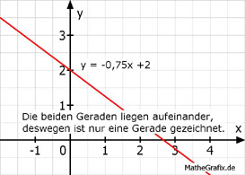

Lineare Gleichungssysteme Aufgabe 64 Bestimmen Sie den Schnittpunkt der Geraden. 3x + 4y = 8 (1) 3 --- x + y = 2 (2) 4 (1) nach y umgestellt 3x + 4y = 8 |-3x 4y = -3x + 8 |:4 y = -0,75x + 2 (2) nach y umgestellt 3 --- x + y = 2 4 0,75x + y = 2 -0,75x y = -0,75x + 2 y = y -0,75x + 2 = -0,75x + 2 |+0,75x 2 = 2 Dies ist eine wahre Aussage. Egal, welche Zahl für x eingesetzt wird, es ergibt sich immer eine wahre Aussage bzw. Lösung. --> unendlich viele Lösungen, die beiden Geraden liegen aufeinander. 